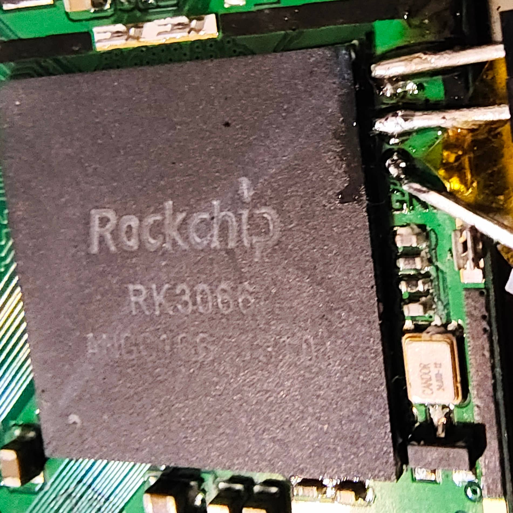

Rockchip RK3066
|
 RK3066 in plastic package | |
| Manufacturer | Rockchip |
|---|---|
| Name | RK3066 |
| Architecture | armv7 |
| CPU | 2x 1.6 GHz ARM Cortex-A9 |
| GPU | ARM Mali-400 |
| Year | 2012 |
| Process | 40nm |
| Mainline | yes |
| Components | |
| CPU |
Works
|
| UART |
Works
|
| Storage |
Works
|
| USB |
Works
|
| Display |
Partial
|
| GPU |
Works
|
| Pinctrl |
Works
|
| I²C |
Works
|
| SPI | |
| Audio |
Partial
|
| Video | |
| Thermal | |
| WiFi |
Works
|
| Bluetooth |
Works
|
| Modem | |
| GPS |
Works
|
| Camera | |
| NPU | |
| Suspend | |
| Ethernet | |
{kind=link}
General description
RK3066 is a Rockchip SoC released in 2012, supported by mainline.
Typical schematics for RK3066 devices are available online.
Devices
| Device | Codename | Chipset | Mainline | Booting |
|---|---|---|---|---|
| DNS AirTab M83W | dns-airtab-m83w | Rockchip RK3066 | No | |
| Upvel UM-514TV | upvel-um514tv | Rockchip RK3066 | N | No |
Flashing and Booting
Like other Rockchip SoCs, the default recovery mode on the RK3066 uses RockUsb. You can use rkflashtool to interact with the recovery mode. Hold the recovery key (usually the volume up button) while booting to enter recovery mode.
The stock stage 2 boot loader 'flashboot' is pretty simple and uses parameters for configuration.
You can run rkflashtool p to read the parameters as text to stdout and rkflashtool P to apply the parameters in the same format from stdin. The text format looks like this:
FIRMWARE_VER:4.0.4 MACHINE_MODEL:rk30sdk MACHINE_ID:007 MANUFACTURER:RK30SDK MAGIC: 0x5041524B ATAG: 0x60000800 MACHINE: 3066 CHECK_MASK: 0x80 KERNEL_IMG: 0x60408000 #RECOVER_KEY: 1,1,0,20,0 CMDLINE: console=ttyS2,115200n8 earlyprintk init=/init PMOS_NO_OUTPUT_REDIRECT initrd=0x62000000,0x00800000 mtdparts=rk29xxnand:0x00002000@0x00002000(misc),0x00006000@0x00004000(kernel),0x00008000@0x0000A000(boot),0x00008000@0x00012000(recovery),0x000C0000@0x0001A000(backup),0x00040000@0x000DA000(cache),0x00200000@0x0011A000(userdata),0x00002000@0x0031A000(kpanic),0x00200000@0x0031C000(system),-@0x0051C000(user)
The only really relevant part is the cmdline, and you can add arbitrary arguments to it (like in the example) to be passed to Linux, and it is the right place to add them (as it overrides various embedded cmdlines), but note that the boot loader has some "special magic" handling of the arguments mtdparts and initrd. In fact, this mtdparts is the source of truth for NAND flash partitioning for flashboot itself, so when you run rkflashtool w boot, the definition of boot comes from that line.
The "Android" boot.img format supported by this loader is NOT compatible with the normal Android format!! It is similar, but slightly mangled (e.g. the SHA1 hash seems to occupy 1 byte less and such). Regular Android boot.img tools can unpack the format, but trying to boot images packed with those tools will fail the hash check. You MUST use an appropriately modified tool such as:
- cm_rk3066_mkbootimg (written in C) confirmed to work great, also has the kernel/initrd addresses predefined
- rockchip-mkbootimg (written in C)
- rockchip-linux scripts/mkbootimg (written in Python)
The loader seemingly has an ability to load a bare kernel instead of a boot.img, if checksummed with rkcrc from the rkflashtool repo, but ValPackett could not get that to work. boot.img images do not seem to require that CRC at all.
The stock boot loader can be replaced with U-Boot SPL/TPL, the doc/board/rockchip/rockchip.rst manual has a special section about RK3066 NAND installation. (Where do the timing values come from?) This will give you DRAM training with fully open source code.
The Rockchip boot process is pretty rock-solid (ha), if you mess up the new boot loader in NAND you can always recover with the Mask ROM ("DFU") mode, if it doesn't appear automatically you need to short the clock of the boot media (as the U-Boot docs say, pin 8 and 9 of the NAND flash).
You can also use U-Boot proper as the boot.img payload for flashboot, just to be able to put the kernel onto the SD card (XXX: SD card seems to drop off quickly).
See also:
- Obtaining RK3066 boot ROM
- u-boot@lists.denx.de: how bootrom on rk3066 executes stuff
- Rockchip wiki: Boot option
- Rockchip bootloader collection
Serial
The 2nd (counting up from 0) UART is commonly used for the debug console and defaults to 115200 baud unlike more recent Rockchip SoCs.
Power and Clock Management
The RK3066 is commonly paired with the following PMICs:
That PMIC is responsible for most voltages, except there's also a very important auxiliary voltage called vdd_core or vdd_log (for "logic") that's usually handled via PWM from the SoC. That voltage scales together with the CPU one, i.e. the DVFS table in the vendor kernel has three columns: frequency, cpu_volt, logic_volt. Various device trees in mainline just have a high voltage hardcoded for this regulator.
Another interesting quirk is that some I2C bus clocks are internally derived from the CPU clock, so the vendor I2C driver uses a cpufreq listener to reapply the I2C clock if it has drifted upon CPU frequency change. That prevents a very "fun" failure mode where the I2C bus the PMIC is on stops working, so DVFS has applied a higher CPU frequency but the necessary voltage change failed to apply, and the CPU crashes.
Overclocks up to 1.8 GHz have been reached on vendor Android years ago.
Memory
The stock boot loader trains DRAM to 300 MHz (U-Boot TPL would use the parameters you give it in the device tree).
The Android kernel has blobs (header) that get copied to SRAM and executed from there (!). On boot all that is used to retrain to a bit of a higher speed as specified in the kernel config (e.g. on DDR3 devices 360 MHz seems common).
It SHOULD NOT be mandatory to retrain memory; if you are seeing instability (freezes, memtester failures) it's far more likely to be that logic voltage, go raise it a bit more.
Display
The mainline Rockchip VOP driver supports this SoC, little patches are required for internal display to work though:
- drm/rockchip: vop: clear DMA stop bit on flush on RK3066
- drm/rockchip: vop: enable VOP_FEATURE_INTERNAL_RGB on RK3066
The SoC can output HDMI and parallel RGB; some devices use a basic LVDS encoder for onboard displays, but others (particularly tablets with a mini HDMI port) use the RK610 chip, which allows for basic LVDS encoding (bypass mode) when HDMI is not connected, as well as scaling (encode HDMI and downscale to mirror to LVDS as well). As of May 2024, ValPackett is starting work on a real RK610 driver (at least LVDS, hopefully also HDMI, probably not audio), however the most basic userspace "driver" for enabling bypass mode is just:
sudo i2cset -y 1 0x40 0x09 0x54 sudo i2cset -y 1 0x40 0x0a 0x00 sudo i2cset -y 1 0x40 0x0c 0x10 sudo i2cset -y 1 0x40 0x08 0x05
Along with pretending to just have a simple "lvds-encoder". The reset pin is &gpio0 RK_PC6; the voltage regulator you might see listed as "hdmi" and the I2S peripherals must be turned on.
Panel pins are likely to be, as defined in the vendor kernel:
- for RK610 devices:
&gpio1 RK_PC3chip select,&gpio6 RK_PB0enable,&gpio2 RK_PC6stabilize- without the stabilize pin, the display takes a long time to come up and comes up with glitches that take a few seconds to clear
- for non-RK610 devices:
&gpio4 RK_PC7chip select,&gpio6 RK_PB4enable
GPU
Lima "just works", but riiiight now you do need to apply (nothing to do with Rockchip in particular, but this fixes compositor lockup upon launching any GL app):
- [v4,2/3 drm/lima: Fix dma_resv deadlock at drm object pin time]
WiFi
The RK3066 is commonly paired with Broadcom SDIO Wi-Fi chips, often Rockchip-rebranded, e.g.: